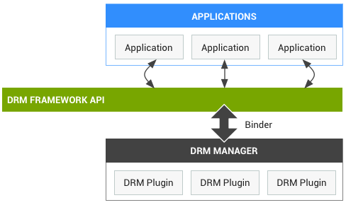

This documents covers the high level design for OMA DRM 1.0 implementation for Android M. AOSP provides DRM Framework and Forward Lock plug-in to support basic DRM usage, where, it is valid only for Forward Lock audio and video. This Forward Lock plugin supports minimal features for OMA DRM v1 where Forward Lock Image, Combine Delivery and Separate Delivery of any media(Image, Audio, Video) were not supported. In order to support complete OMA DRM v1 in the Android platform M, we have designed this 'OmaDrmEngine' plugin. The architecture, technical support information and Control Flows of same is described in the document. If any one asking, What is OMA DRM? The answer is very simple. Its is 'Digital Right Management' environment where device can efficiently manage/play Rights-protected media contents. To know more about DRM, please do not forget to read OMA DRM v1 specification, where you can find much more about DRM. (link: http://technical.openmobilealliance.org/Technical/technical-information/release-program/current-releases/drm-v1-0)
Digital rights management (DRM) is an approach to prevent unauthorized redistribution. Drm contents are license based media contents and unauthorized use of same is prohibited.
All Drm media files can be categorized in one of the following -
Forward Lock (FL)- Forward Lock prevents illegal copying of files.
Combined Delivery (CD) - Extension of forward lock, The user can use the content as defined in the rights object. The rights object defines the number of times and length of time that the content can be used.
Seperate Delivery (SD) - In the Separate Delivery mode, the content and rights are packaged and delivered separately. The Rights Object (RO) and the Content Encryption Key (CEK) are packaged and transferred in a safe way such as unconfirmed Wireless Application Protocol (WAP) push or HTTPS. User is allowed to forward the content message but not the rights message.
User can downaload DRM media contents from one of the many
DRM content providers.
e.g - Service providers such as AT&T, Telcel, Verizon, Claro ...
Rights/License is the mean of providing autorization to access rights protected contents.
The rights object defines the number of times and length of
time that the content can be used.
e.g - Count based (x number of times)
Date and time based (From start to end date)
Interval based (For x period)
Two formats of license files are used for distribution, XML and WB-XML.
User can buy lincense from content provider.
Image/Mimetype - JPG, BMP, PNG, GIF, WBMP ...
Audio/Mimetype - AMR, AAC, MIDI, IMY, WAV, M4A, MP3, 3GA, OGG ...
Video/Mimetype - MP4, 3GP ...
To prevent unauthorized redistribution. User can use(Play/Display, Set as ringtone, Set as wallpaper) the content as per available license.
Unauthorized redistribution is prohibited.
No.
No.
There is no way to get DRM content from device is useful form. DRM files are stored in shared location(such as SD card) in encrypted form.
No, DRM license are private to device installed and there is no way to temper license.
Free DRM content are available for testing purpose.
Some of the sites providing free DRM contents are -
http://sqaap1.htc.com.tw/General-DRM.html
http://supdrm.net16.net/DRM/
http://centum-fmc.es/DRM/index_drm.xhtml
The Android platform provides an extensible DRM framework that lets applications manage rights-protected content according to the license constraints that are associated with the content. The DRM framework supports many DRM schemes; which DRM schemes a device supports is up to the device manufacturer.
The Android DRM framework is implemented in two architectural layers (see figure below):
For application developers, the DRM framework offers an abstract, unified API that simplifies the management of rights-protected content. The API hides the complexity of DRM operations and allows a consistent operation mode for both rights-protected and unprotected content across a variety of DRM schemes. For device manufacturers, content owners, and Internet digital media providers the DRM framework`s plugin architecture provides a means of adding support for a specific DRM scheme to the Android system.
References: https://source.android.com/devices/drm.html#architecture
OmaDrmEngine is complete solution of OMA DRM v1, it comprises three main components, first one a native library `libomadrmengine.so` which work as a DRM service plugin, second one a Android application `OmaDrmEngine` for Rights management, Rights-protected Image viewer and Utility Framework for DRM and third one a OMA DRM Demo application. The `libomadrmengine.so` is the name of our DRM plugin which is resides in /system/vendor/lib/drm/. As shown in the figure below, the DRM framework uses a plug-in architecture to support various DRM schemes. The DRM manager service runs in an independent process to ensure isolated execution of DRM plug-ins. Each API call from DrmManagerClient to DrmManagerService goes across process boundaries by using the binder IPC mechanism. The DrmManagerClient provides a Java programming language implementation as a common interface to runtime applications; it also provides a DrmManagerClient-native implementation as the interface to native modules. The caller of DRM framework accesses only the DrmManagerClient and does not have to be aware of each DRM scheme. Plug-ins are loaded from `/system/vendor/lib/drm/` and `/system/lib/drm/` automatically when DrmManagerService is started.
`libomadrmengine.so` :
This is a native(C, C++) library, responsible for core DRM functionality. It contains DRM Encryption, Decryption and Rights management of the Rights protected contents. What are the internal mechanism implemented here is described below. This library must include in the production.
`OmaDrmEngine Application` :This app is the supporting component of the OMA DRM plugin `libomadrmengine.so`, it play most important role in the OMA DRM complete solution.
DRM Image Viewer and Rights Management is the most important feature of this application. All types of Drm image can be display through application. Download provider or File Manager types of application fire a Intent.ACTION_VIEW intent to display Drm image files. There is no other way to display DRM Image file in the device.
Rights Management module of the application is responsible for parsing WBXML, Receiving WAP PUSH messages for rights and intimating native drm pluging for rights installation. Once rights expired for DRM file this module has also responsibility to show proper error prompt to the user where user can renew license of the media file. Another feature of the module is to display `Details` of the DRM file where clearly mentioned the original media type and remaining licens information of the media content.
Utility frameworks(Java) of the app is the bridge between Rights Management, Image Viewer and `libomadrmengine.so` via native Utility Framework.
`Utility Framework – native` :This is a shared library placed under `/system/lib/libomadrmengineutil_jni.so`, it is used to get DRM image data for DRM server plugin and other communication like License Consume intimation, License expired notification between the App and DRM plugin.
`OMA DRM Demo application` :This app will demonstrate the DRM contents behavior in the device. The Demo application should not be participate on the production releases, OEM has responsibility to remove this demo application from the build.